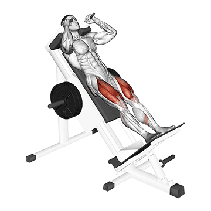
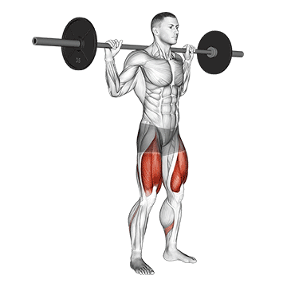
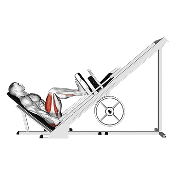
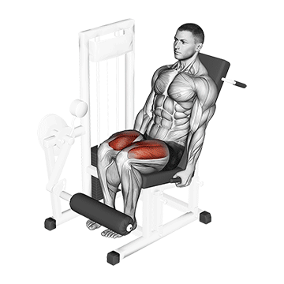
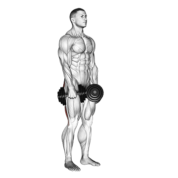

Agachamento Hack
O agachamento Hack é um exercício realizado em máquina, focado nos quadríceps, glúteos e posteriores da coxa. Proporciona segurança, estabilidade e fortalecimento das pernas, sendo ideal para hipertrofia muscular.

Agachamento Livre
O agachamento livre é um exercício composto que trabalha quadríceps, glúteos, posteriores da coxa e core. Promove força, equilíbrio e hipertrofia, sendo essencial para o desenvolvimento muscular e funcionalidade.

Leg Press
O leg press é um exercício realizado em máquina, focado nos quadríceps, glúteos e posteriores da coxa. Proporciona fortalecimento, hipertrofia e segurança ao trabalhar grupos musculares das pernas.

Cadeira Extensora
A cadeira extensora é um exercício de isolamento para quadríceps, realizado em máquina. Fortalece e define as pernas, sendo ideal para hipertrofia, resistência muscular e reabilitação de membros inferiores.

Mesa Flexora
A mesa flexora é um exercício realizado em máquina, focado nos músculos posteriores da coxa. Promove fortalecimento, hipertrofia e resistência, sendo ideal para equilíbrio muscular e prevenção de lesões.

Stiff
O stiff é um exercício que trabalha isquiotibiais, glúteos e lombar. Realizado com barra ou halteres, promove força, alongamento, hipertrofia e estabilidade na cadeia posterior do corpo.